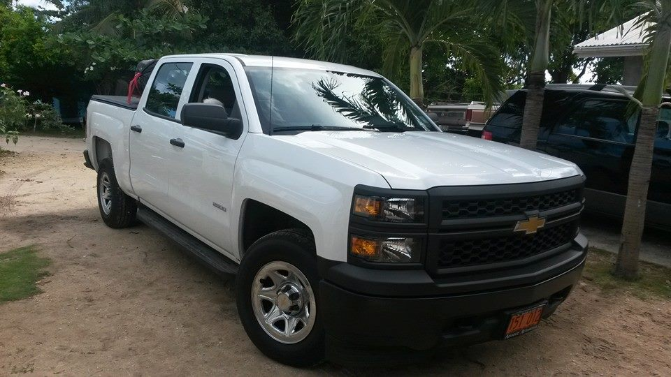

Founding Members
Justin Tibbetts

I drive a 2016 Mitsubishi Outlander and it is my dream car. Yes, I am living one of my dreams and you would understand why if you ever drove one. Come drive with me
Hannah Trewern
Hannah drives a Ferrari 360 Spyder but keeps a 2014 Jeep Grand Cherokee for when it rains!
Boris Brady

Hi I'm the proud owner of a 2007 Jeep Wrangler. Ever since I purchased this beauty back in 2013 it has been a constant drain on my bank account. When I purchased this item it was as if it came directly from the factory. and as you can see it looks nothing like a stock jeep wrangler. I need help! I'll post a link to a go fund me page later on!
Miguel Solomon
founder Migzz here My truck is an auto bot her name is Rumbler Prime my dream car would be a1950s Chevy pickup metallic Blue all chrome trim with a Big bass system and Hydraulics or an Abrums.